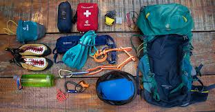
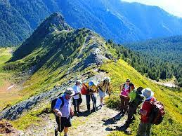

A Sua Próxima Aventura Começa Aqui.
Descubra paisagens intocadas com a ECOTOUR.
Pacotes em Destaque: A Magia do Posicionamento
Trilha da Aurora
3 dias / 2 noites. Experiência de montanhismo leve.
OFERTA!
Cachoeiras Escondidas
Passeio de 1 dia. Ideal para iniciantes.
Por Que Viajar Conosco?
Garantimos segurança, guias experientes e o menor impacto ambiental. Nossa missão é conectar você à natureza de forma responsável.
**Experiências Únicas e Intimas:** Criamos roteiros exclusivos que vão além do turismo tradicional. Nossas expedições são limitadas a pequenos grupos para garantir uma vivência autêntica e íntima com a natureza. Não se trata apenas de caminhar, mas de sentir e aprender sobre a beleza intocada que nos cerca.
**Logística Impecável e Suporte Total:** Utilizamos rastreadores via satélite e bases logísticas estratégicas para monitorar sua segurança 24 horas por dia. Planejamos cada detalhe — desde a alimentação orgânica e local até o conforto dos acampamentos — para que você se preocupe apenas em apreciar a vista e a aventura.

Segurança Inegociável e Qualidade
Sua tranquilidade é fundamental. Por isso, investimos apenas em equipamentos de **última geração** e certificados internacionalmente. Do capacete à corda, tudo é inspecionado antes de cada expedição, garantindo a **máxima segurança** em ambientes de alta montanha.
Cada pacote inclui um **guia certificado pela ABETA**, especialista em primeiros socorros em áreas remotas. A preparação começa na escolha do material de segurança e culmina na sua experiência de exploração sem preocupações.

Compromisso com o Planeta (Float Right)
Somos mais que uma agência; somos guardiões da natureza. Nossos guias são especializados em **turismo de baixo impacto**, garantindo que cada trilha, cada cume e cada acampamento respeite o ecossistema local.
A sustentabilidade não é um extra, é o nosso roteiro. Venha aprender sobre a **flora e fauna nativas**, com narrativas ricas que transformam uma simples viagem em uma verdadeira aula de biologia e conservação.